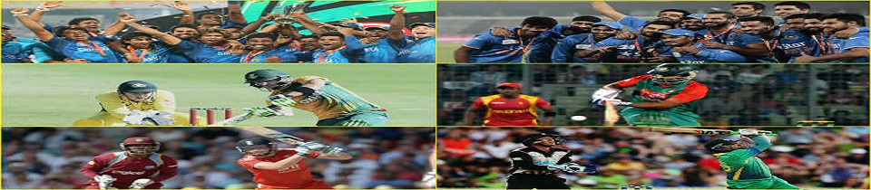
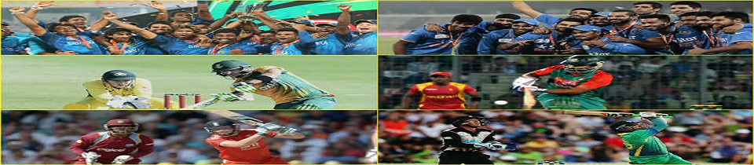

About cricket :
Cricket is a bat-and-ball game played between two teams of eleven players on a cricket field, at the centre of which is a rectangular 22-yard-long pitch with a wicket (a set of three wooden stumps) sited at each end. One team, designated the batting team, attempts to score as many runs as possible, whilst their opponents field. Each phase of play is called an innings. After either ten batsmen have been dismissed or a set number of overs have been completed, the innings ends and the two teams then swap roles. The winning team is the one that scores the most runs, including any extras gained, during their one or two innings. At the start of each game, two batsmen and eleven fielders enter the field of play. The play begins when a designated member of the fielding team, known as the bowler, delivers the ball from one end of the pitch to the other, towards a set of wooden stumps, in front of which stands one of the batsmen, known as the striker. The striker's role is to prevent the ball from hitting the stumps by use of his bat, and simultaneously to strike it well enough to score runs. The other batsman, known as the non-striker, waits at the opposite end of the pitch near the bowler. The bowler's objectives are to prevent the scoring of runs and to dismiss the batsman. A dismissed batsman must leave the field, and a teammate replaces him at the crease. The most common forms of dismissal are bowled, when the bowler hits the stumps directly with the ball, leg before wicket, when the batsman prevents the ball from hitting the stumps with his body instead of his bat, and caught, when the batsman hits the ball into the air and it is intercepted by a fielder before touching the ground. Runs are scored by two main methods: either by hitting the ball hard enough for it to cross the boundary, or by the two batsmen swapping ends by each simultaneously running the length of the pitch in opposite directions whilst the fielders are retrieving the ball. If a fielder retrieves the ball quickly enough to put down the wicket with a batsman not having reached the crease at that end of the pitch, that batsman is dismissed (a run-out occurs). Adjudication is performed on the field by two umpires.
return of blast
watch on gtv